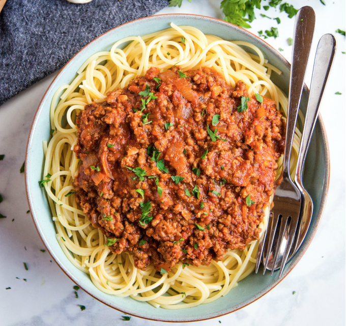

Spaghetti w/ Meatballs!

Spaghetti with Meatsauce: A delicious blend of Italian spices blended perfectly
with garlic, onion,
and hamburger meat and seasoned with salt and pepper. After simmering
for hours, it is served atop a pile
of delectable spaghetti noodles boiled to
perfection and proportionally salted to taste!
From our home to yours, we hope you enjoy this delightful creation!
- 1 lb. Hamburger Meat (I usually go with half lean and half 85%
- 2 tblspoons Italian Seasoning
- 4 tblspoons minced garlic (about a full clove of fresh garlic)
- 1/2 yellow or white onion
- salt and pepper to taste
- Secret Ingredient: brown sugar 2 tblspoons
- (1) 16 oz. pkg either spaghetti noodles, or angel hair pasta
- (1) Jar of Bertolli Roasted Garlic Pasta Sauce
- (1) 10 oz. can of Hunt's tomato sauce
- 1 Box garlic bread, or garlic cheese bread from the frozen foods section
- Preheat oven to 425 degrees. (Or follow the directions on the box of garlic bread if the temperature is different!)
- Place the garlic bread or garlic cheese bread on a baking sheet or baking stone.
- Prepare the vegetables by chopping the onion and mincing the garlic (unless you chose to go with pre-minced garlic like I do!).
- Brown the hamburger meat over medium heat along with garlic, onion, salt and pepper.>
- While the hamburger meat is browning, have a pot big enough to hold the spaghetti noodles boiling water with plenty of salt in it.
- Once the hamburger meat is browned completely, drain the fat.
- Return the hamburger meat to the pan and place back on the stove over medium heat and add in the pasta sauce and tomato sauce.
- Once the water for the spaghetti noodles is boiling, break the noodles in half and drop them carefully into the water, try not to splash or it could burn you.
- Set a timer for 9 minutes for spaghetti noodles, or 7 minutes for angel hair pasta.
- Place the garlic bread in the over and plan 6-8 minutes for it to heat up and brown the bottom slightly.
- While the pasta is boiling, reduce the heat of the spaghetti sauce to low and add in the 2 tablespoons of brown sugar.
- Once the timer goes off for the pasta, turn the heat off to the pasta and remove the garlic bread from the oven.
- Drain the pasta. You can coat the pasta with any type of cooking oil (healthier option is to use olive oil), or not. It is personal preference. Without the oil the pasta will stick to itself.
- Drop some pasta on a plate, pour a ladle or two of Meatsauce on it, and serve with salad and breadsticks!
- Enjoy!